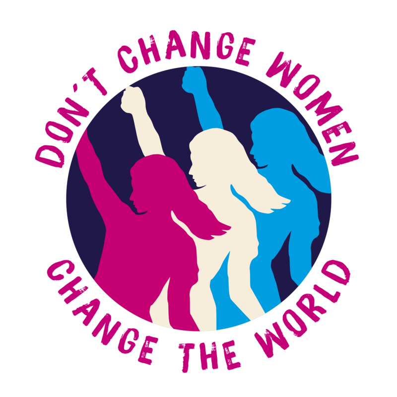

Gender Discrimination
1. 4 out of 5 victims of human trafficking are girls. The Malala Fund raises awareness and funds for girls to get out of this cycle and into school.
2. Less than 30 percent of the world's researchers are women. Google has a program to inspire the next generation of tech innovators. It helps girls gain exposure to careers in science and technology.
3. In 2016, just 57 percent world's working-age women are in the labor force, compared to 70 percent of working-age men. Microlending programs like Kiva help women start and sustain their own businesses.
4. By 2020, there will be 1.4 million open technology jobs in the U.S. and, at the current rate of students graduating with degrees in computer science, men will outnumber women 4:1. Girls Who Code aims to educate and expose at least 1 million girls to computer science by 2020. Learn more about what they do
5. Women currently hold 24, or 4.8 percent of CEO positions at S&P 500 companies. Mentorship programs like Step Up help keep girls in school, getting them that much closer to an executive position. You can play a part too.
6. Women get 79 cents, while Men get 1 dollar, for the same exact work. That equates to a 21% wage difference, an extremely large pay gap. Get involved and Fight Back!